Cross-language replication
The Same Analysis, Twice
R and Python produced perfectly nested variable selections and test RMSE values that differ by only $53.
Using R, I built a multiple regression model for residential sale prices in Ames, Iowa — comparing three candidate models built from the same starting point, running fit diagnostics, and scoring the held-out test set once. I then replicated the whole process in Python, starting from the identical training and test files the R workflow had produced.
Both versions used the exact same cleaned data, the same 2,182-house training set, and the same 546-house test set.
The final R model used 43 predictors. The final Python model used 45. At the LASSO screening stage, before either model was narrowed further, 56 predictors survived in R compared with 62 in Python.
Despite arriving at different-sized models, the predictive performance was remarkably close. The R model’s test RMSE was $21,081, the Python model’s $21,134 — a difference of $53. On mean absolute error the figures are $12,984 and $12,901.
- $53RMSE gap, R vs Python
- $308Median disagreement
- 43 ⊂ 45Nested selections
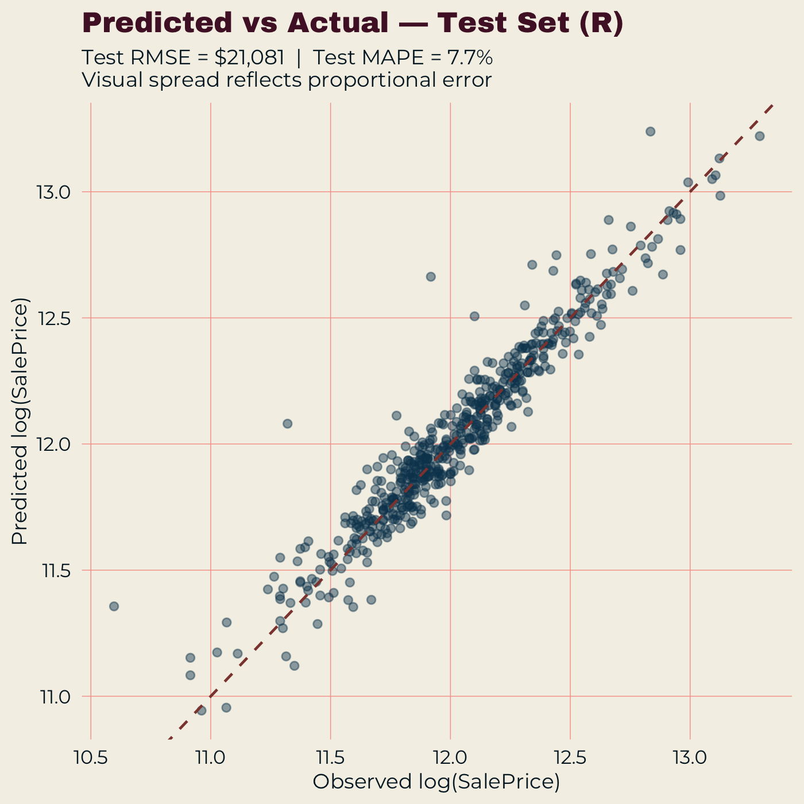
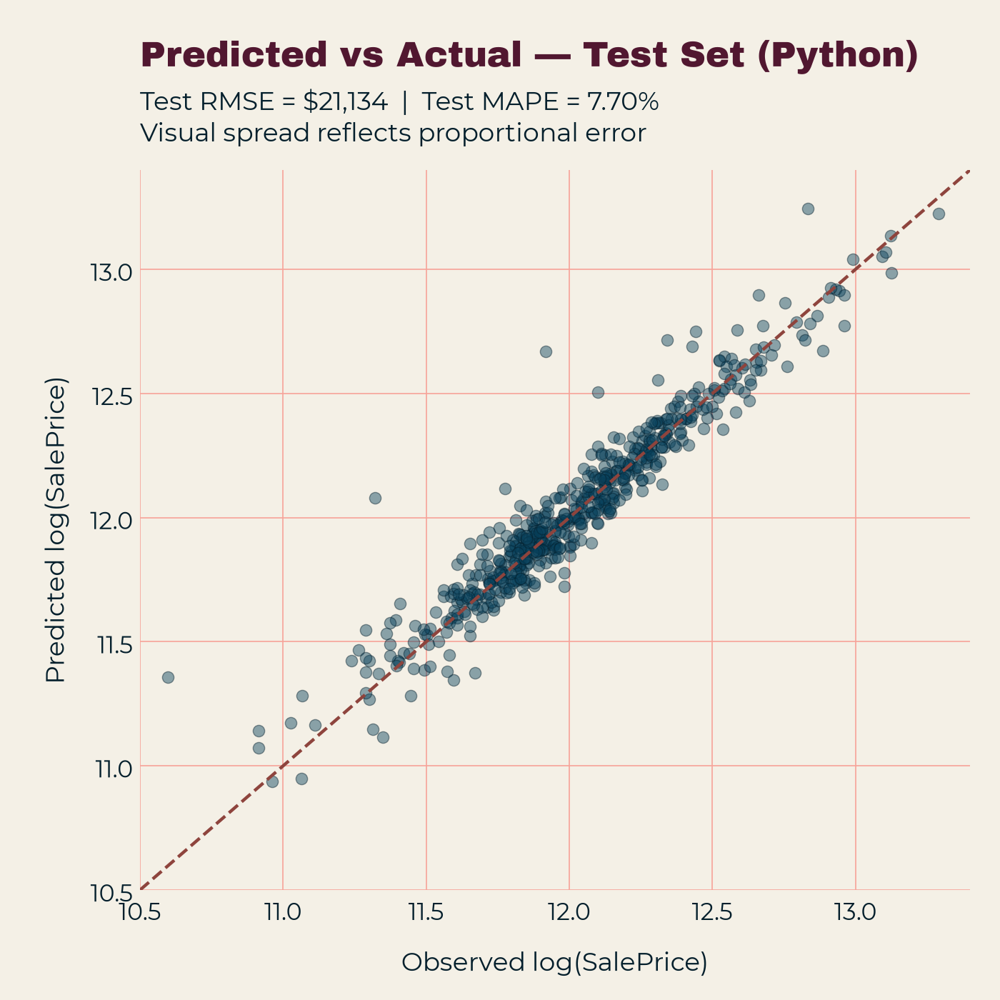
Both axes are on the log scale, so the visible spread reflects proportional error rather than dollar error. The two figures are drawn on identical axes and they are nearly indistinguishable. The same handful of outliers appear in both, at the same coordinates, missed in the same direction by nearly the same margin. The agreement also holds at the level of individual houses, not just in aggregate — which is a separate question, and one the next section takes up directly.
And when I compared the two variable lists directly, the reason became clear — and it was not the reason I expected.
The two selections are perfectly nested. All 43 of R’s predictors appear in Python’s 45. All 56 from R’s LASSO stage appear in Python’s 62. There is not a single predictor that R kept and Python discarded, at either stage. Python’s screening simply admitted a handful of additional marginal variables.
That is a cleaner result than the one I set out to find. Two implementations, in different language ecosystems, with different default behaviours deliberately reconciled, did not merely reach similar predictions — one selected a strict subset of the other’s variables, at both stages, with nothing chosen by R that Python discarded.
Where variable choice does matter turned out to be somewhere else entirely, and I return to it further down.
Individual predictions
How Close Is “Nearly Identical”?
A $53 gap in test RMSE is an aggregate figure, and aggregates can hide disagreement. Two models could miss by the same total while disagreeing sharply on individual houses, if their errors ran in opposite directions on different properties. So the aggregate number does not settle whether the two models are making the same predictions — it only rules out their being different in one particular way.
The two sets of predictions correlate at 0.9999. That figure is worth stating mainly in order to set it aside: it is not evidence of much. Both models are predicting the same 546 sale prices across a range spanning roughly $40,000 to $600,000, and any two models with even modest skill will track a range that wide closely enough to correlate near 1. A correlation this high would appear between models disagreeing by tens of thousands of dollars on individual houses.
What answers the question is the distribution of the disagreements themselves, in dollars:
| Percentile of test houses | Absolute difference |
|---|---|
| 25th | $143 |
| 50th | $308 |
| 75th | $567 |
| 90th | $929 |
| 95th | $1,720 |
| 99th | $5,006 |
| Maximum | $8,579 |
Set that against the models’ own accuracy. Their test RMSE is about $21,000 and their mean absolute error about $13,000. Half the test set sees the two models within $308 of each other — roughly 2.4 % of their mean absolute error. Ninety percent fall within $929. Even the single largest disagreement anywhere in the test set, $8,579, is smaller than either model’s mean absolute error.
Neither specification has a clear edge on this test set. R has marginally lower RMSE, Python marginally lower MAE and MAPE. Of the 546 test houses, the 45-predictor version lands closer to the actual price on 281 and the 43-predictor version on 265 — a 51.5 to 48.5 split, essentially even.
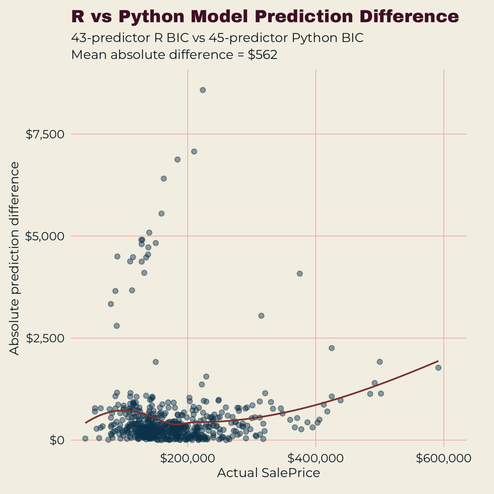
The disagreements are not spread evenly. The largest cluster sits roughly between $100,000 and $250,000, and the two predictors Python retained help explain why: both are category indicators, so houses in those categories receive a direct adjustment in the 45-predictor model that they do not receive in the 43-predictor one.
But that is not the whole story, and it would be wrong to say every other house gets an identical prediction. Adding two terms causes all forty-five coefficients to be re-estimated, including the forty-three the two models share. So predictions shift slightly even for houses belonging to neither category — the smallest difference anywhere in the test set is $1.38, not zero. The mass sitting near zero in the figure is the evidence that those indirect shifts are generally very small.
One further check separates variable selection from the least-squares implementation. I refit Python’s 45-predictor specification in R, on the same training data, and scored it on the same test set. That refit reproduced Python’s reported test RMSE, MAE, and MAPE to the precision displayed — $21,134, $12,901, and 7.70 %. The remaining cross-language difference therefore appears to come from which variables were selected rather than from any practically meaningful difference in how the two environments fit the final regression.
Context
The Data and the Question
The project uses the Ames Housing dataset assembled by Dean De Cock from Ames city assessor records and residential sales from 2006 through 2010 (De Cock, 2011). The original dataset contains 2,930 homes and 82 variables.
The question I set out to answer was narrow: how accurately can the sale price of an ordinary residential transaction be predicted from the property characteristics in this dataset, and how much model complexity does that actually require?
“Ordinary” needed defining, because the raw records contain transactions that are not ordinary at all — sales the assessor flagged as abnormal, and a handful of houses far outside the size range the data can support. I excluded those from the modeling population rather than down-weighting them. What remains still includes several less-standard sale conditions, which turn out to matter later.
One piece of local context is worth having in hand before interpreting individual coefficients. Ames is a university town, and not marginally so: Iowa State’s fall 2010 enrollment was 28,682 against a city population of 58,965 (Iowa State University, 2010; U.S. Census Bureau, 2010a). Those two figures count different universes, so this is not a claim that half of Ames residents were students — but it indicates the scale of the university relative to the city.
The housing market is unusually renter-heavy. At the 2010 Census, 42.6 % of occupied housing units in Ames were owner-occupied, against 65.1 % nationally (U.S. Census Bureau, 2010b, 2012).
None of that enters the model. It becomes relevant later, when one coefficient turns out to point the opposite direction from intuition.
The next section describes the cleaning process in some detail. It reduced the original 2,930 homes to a final analysis set of 2,728.
Data preparation
Cleaning the Data
The original data are not model-ready. Some predictors carry substantial missing data, ranging from a few dozen rows to nearly five hundred. Others are exactly redundant — several floor-area measures sum to total living area, and several basement measures sum to total basement square footage — so including them together would put an exact linear relationship into the model before fitting even began. Ordinal variables such as quality ratings arrive as text rather than ordered numbers. And the raw records include transactions that are not ordinary residential sales at all.
Each of those required a decision, and the decisions are not interchangeable. What follows is the reasoning behind each.
Ordinal variables
Ordered categories were converted to integer scales rather than treated as unrelated nominal categories — quality ratings from Poor through Excellent, basement finish types, functional condition, and so on. I also built presence indicators for basement, garage, fireplace, pool, fence, alley, and masonry veneer, so the model could distinguish “absent” from “present but rated poorly.”
Two things about this encoding are worth stating plainly. Treating an ordered rating as a single integer imposes equal spacing on the scale — the model assigns the same effect to a move from Poor to Fair as from Good to Excellent. And mapping the absent level to zero places “no basement” one step below “poor basement” on the same axis. Neither is guaranteed to be true.
Both are simplifications made deliberately. Dummy-coding every ordered factor would have added hundreds of columns to a design matrix already expanding to 221, and would have discarded the ordering information that makes these variables useful in the first place. The presence indicators are what limit the second assumption’s reach: with an explicit “has a basement” flag in the model, the zero level no longer has to carry that distinction by itself.
Redundant measures
For each redundant group I kept the total and dropped the components:
Gr_Liv_Area rather than the floor-area measures that sum
to it, Total_Bsmt_SF rather than its parts. The
components may carry some information the totals do not — a
1,500-square-foot house split across two floors is not identical to
one all on the ground floor — but including both puts an exact linear
dependency into the design matrix. I kept the totals and did not test
what the components would have added.
Missing values
Missing values were handled case by case.
Lot_Frontage was the clearest case: 490 missing values,
and a correlation with sale price too weak to appear among the twenty
strongest predictors. Complete-case deletion across the original
variable set would have discarded roughly 640 houses — about 22 % of
the data — and Lot_Frontage alone accounted for most of
them. It was dropped instead.
Garage_Yr_Blt had 159 missing values, almost all of them
houses with no garage. Other garage variables already captured
presence and characteristics, so the year was dropped rather than
losing every garage-less house.
Other missing values were easier to resolve. For 23 homes with no recorded masonry veneer type, I treated the absence as meaning no veneer and set the corresponding area to zero. Some of those houses may have had veneer that simply went unrecorded — but 23 rows out of more than 2,700 could all be wrong without meaningfully moving the model. As it happens, no masonry-veneer variable survived into the final model at all, so nothing I report depends on that imputation.
After that imputation, nine rows still contained missing values. Those were dropped.
Which sales to predict
I then narrowed the analysis to the kinds of residential sales the model was actually intended to predict.
The Ames data contain a sale-condition category literally labeled
Abnorml, and those transactions were removed. The other
less-standard conditions — Partial, Alloca,
Family, and AdjLand — were kept. That
distinction matters because some of those retained groups later turned
out to be harder to predict, even though none of them was
systematically over- or underpriced by the model.
I also removed houses with more than 4,000 square feet of above-ground living area, following De Cock’s discussion of those observations.
There were only five houses in that range. Three were partial sales that did not reflect ordinary market value, while the other two were very large houses whose prices were not obviously unreasonable.
The broader problem was that five observations are too few to learn reliably about houses in that size range. Rather than allow a handful of extreme-size properties to define behavior the dataset could not estimate well, I excluded all five from the modeling population.
Together, these decisions took the dataset from 2,930 houses and 79 candidate columns down to 2,728 houses and 77 candidate predictors — 70 from the source data plus the seven presence indicators I built. Expanded into indicator columns for the categorical variables, those 77 predictors become 221 columns in the design matrix, which is the number the selection procedures actually worked with.
Response scale
Why Model Log Price?
The raw sale-price distribution has an obvious long upper tail created by a smaller number of expensive homes. The log-transformed distribution is much more balanced.
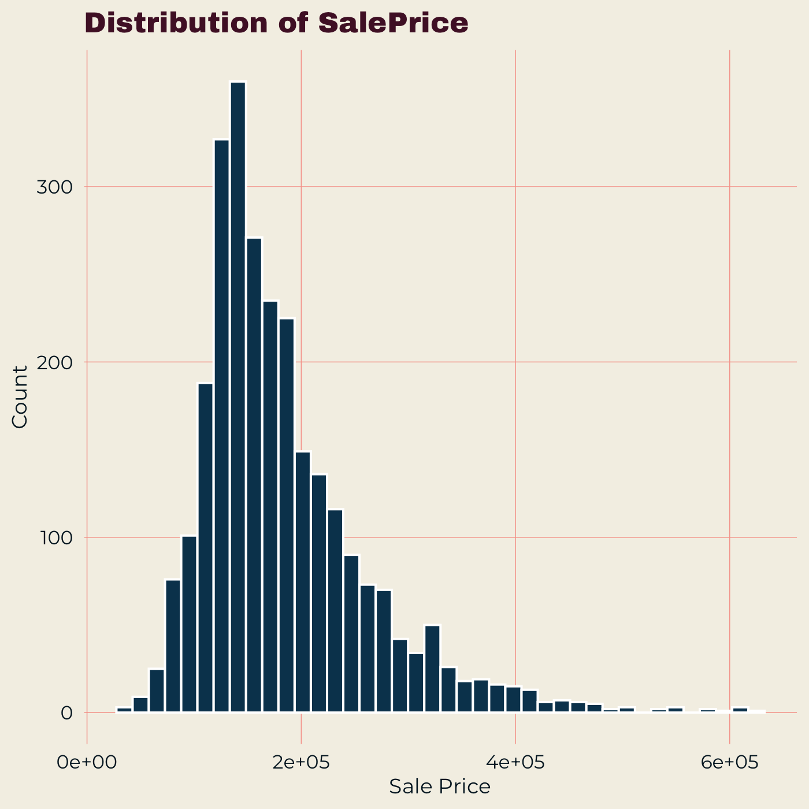
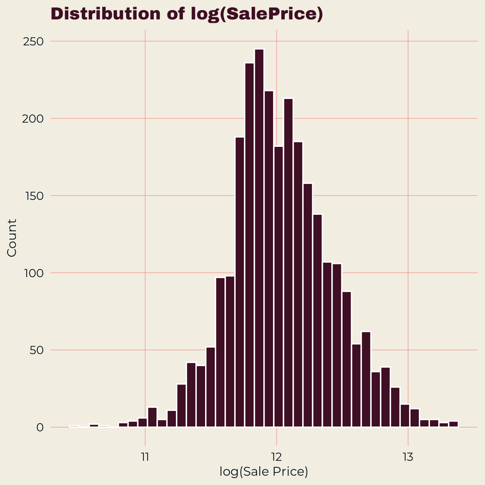
The difference is visible enough in the two figures above that a numerical skewness test would add nothing. I therefore modeled log(SalePrice) rather than raw dollars.
Predictions were converted back to dollars for evaluation. One qualification is important: simply exponentiating a log-scale prediction gives a median-style prediction on the original scale rather than a bias-corrected mean. Correction methods exist — Duan’s (1983) smearing estimator is the standard nonparametric approach — but I did not apply one.
The log scale also gives useful interpretations for many coefficients, because changes can be expressed as percentage differences in price.
Signal strength
A Few Variables Carry Most of the Broad Signal
Two variables stand out immediately: overall quality and above-ground living area.
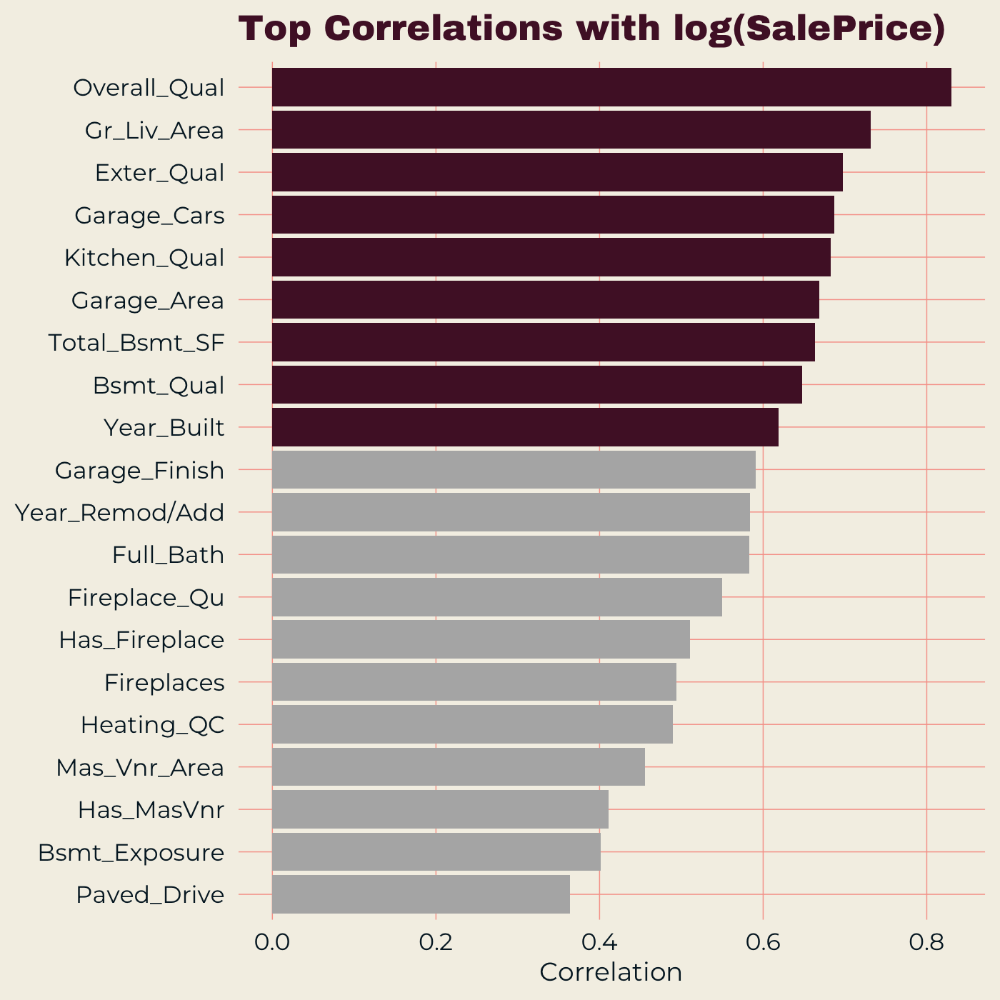
Nine variables clear a correlation of 0.60 with sale price, and the top two clear 0.73. A model using only those two captured much of the broad shape of the housing market, but its test RMSE was $35,519 and its mean absolute percentage error 14.9 %.
The final model reduced those figures to about $21,000 and 7.7 %.
So the two strongest variables carry a large share of the broad signal, but the remaining predictors collectively make the model substantially more accurate.
Which of the two is the stronger predictor depends on how you ask. On its own, overall quality has the tighter relationship with price — a correlation of 0.83, against 0.73 for living area. But once every other variable is in the model, living area carries roughly twice the weight: comparing standardized coefficients, which express each effect per standard deviation of the predictor and so can be compared across variables measured in different units, living area comes in at 0.359 against quality’s 0.181 — very close to double.
That comparison is sound for these two, since both are well-populated and roughly continuous. It does not generalize cleanly. Standardizing multiplies each coefficient by its predictor’s standard deviation, so a near-constant indicator ends up with a small standardized coefficient regardless of how large its raw effect is — and conversely, a predictor’s standardized coefficient depends on how much of its contribution is shared with correlated predictors in the same model. One of the ranking rules tested later runs into that second problem.
The reason for the reversal is overlap. Quality correlates 0.55 to 0.73 against everything else in the correlation figure below, while living area stays under 0.6 with all of them. Less of what living area contributes is already available elsewhere in the model.
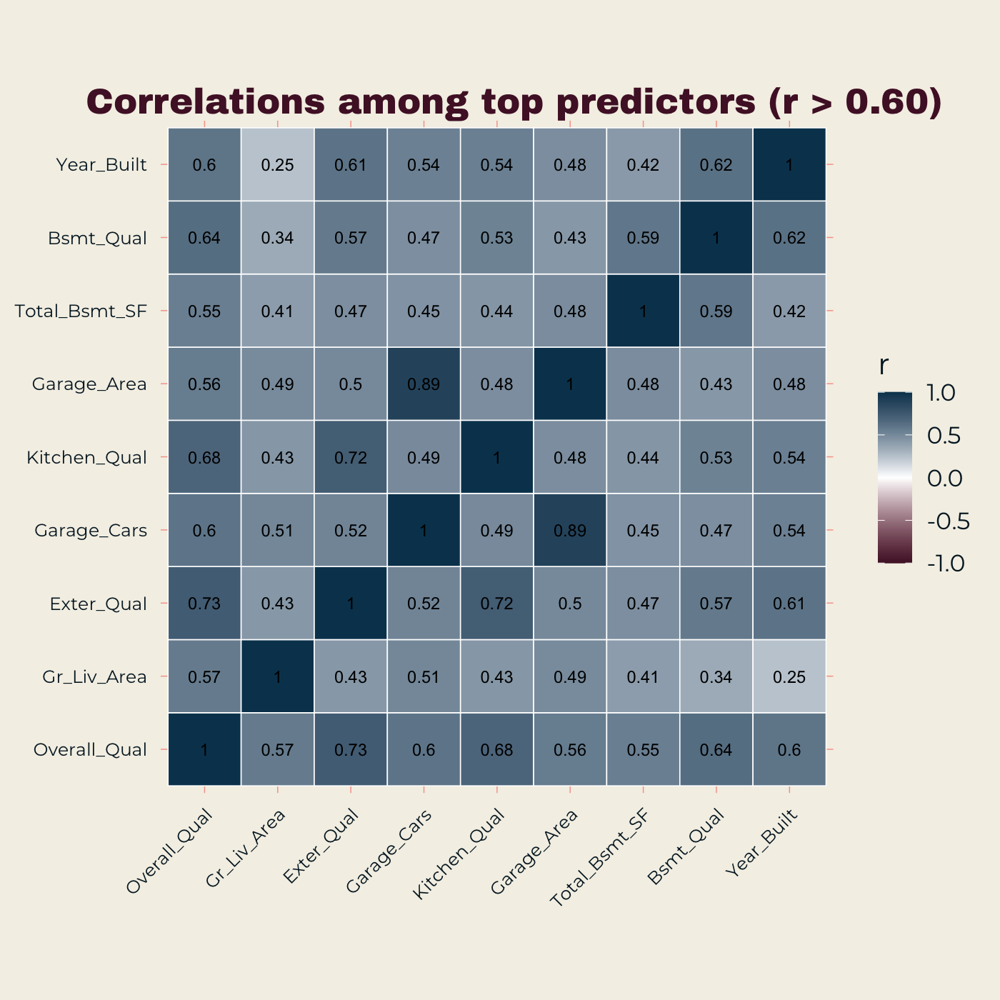
That overlap is what the second figure shows. Garage capacity and garage area correlate at 0.89, the highest pairing among the strongest predictors. Living area is the exception — the least entangled of the group, correlating below 0.6 with everything else on the list.
Selection procedure
Building the Model
I started with LASSO (Tibshirani, 1996), a method that shrinks weak predictors and can remove some of them entirely.
Instead of choosing the version with the absolute lowest cross-validation error, I used the 1-standard-error rule (Hastie, Tibshirani and Friedman, 2009, §7.10), which accepts a simpler model when its estimated performance is still close to the minimum. This is a convention rather than a statistical conclusion — the one-standard-error boundary is a stated tolerance, no more principled than any other threshold, and a model within that tolerance may still be genuinely worse. What it buys is a smaller model in exchange for an estimated cross-validation error within one standard error of the best observed — a difference small enough by that convention to accept, though the convention is doing the work rather than any formal test. The bootstrap comparison further down is where a genuine distinguishability question gets asked.
After that screening step, I refit ordinary regression on the surviving variables so the reported effects would no longer be deliberately shrunk toward zero.
I then tested whether the model could be simplified further.
Within each language, both backward-selection approaches branched from that language’s own LASSO output: AIC (Akaike, 1974), which penalizes extra variables lightly, and BIC (Schwarz, 1978), which penalizes them more heavily. Neither fed into the other — they are parallel alternatives from a common starting point.
At the LASSO stage, R retained 56 predictors and Python 62. The less aggressive AIC selection brought those to 52 and 59 respectively. The heavier BIC penalty produced the two final models: 43 predictors in R, 45 in Python.
In both languages the three models performed very similarly on the held-out test set, and in Python — where I ran a formal comparison, described below — the differences were not distinguishable from zero. That is why I chose the smaller model. It did not have the lowest observed error; it achieved essentially the same predictive accuracy with fewer variables.
Test performance
How Accurate Was the Final Model?
Alongside the dollar errors given above, the final R model’s average error was 7.75 % of the sale price, and the Python model’s was 7.70 %. The two-variable baseline, by comparison, missed by 14.9 %.
Within Python, I also compared the three candidate models using 10,000 paired bootstrap resamples (Efron, 1979) of the test houses.
Every uncertainty interval for the model differences crossed zero, across all three error measures. The largest observed gap was $694, and its 95 % interval ran from −$232 to +$1,760.
With this test sample, the models cannot be distinguished reliably from one another.
The comparison also has a boundary. It measures uncertainty from the particular houses in the test sample while holding the fitted models fixed. It does not measure uncertainty in which variables are selected in the first place. Quantifying that properly requires resampling the selection procedure itself — the approach Meinshausen and Bühlmann (2010) call stability selection. This project does not do that.
Selection instability
How Much Does Model Size Cost?
The bootstrap compares three models of broadly similar size. A separate question is what happens when the model is cut substantially — and whether it matters which variables you keep.
To test that, I ranked all candidate predictors three different ways, using training data only, and built a 20-predictor model from each ranking. The rules were fixed in advance, along with a prediction about the outcome.
| Ranking rule | Test RMSE | Test MAPE | Shares with next |
|---|---|---|---|
| Marginal correlation with price | $25,127 | 10.15 % | — |
| LASSO entry order | $26,068 | 9.29 % | 13 of 20 with the above |
| Standardized coefficient size | $29,174 | 9.54 % | 7 of 20 with the above |
Marginal correlation and standardized coefficients share only 5 of their 20 variables.
The recorded prediction was that all three would land within a few hundred dollars of each other. They span $4,048. The prediction was wrong.
That failure is the useful part, and it is where this project’s real instability finding lives. Instability of this kind is well documented — Breiman (1996) treats it as a general property of subset-selection procedures, and Zou and Hastie (2005) show that penalized selection in particular has little basis for choosing among strongly correlated predictors. Cutting from 43 predictors to 20 costs between $4,000 and $8,000 of accuracy, and which 20 you keep matters a great deal. In this comparison, greater overlap coincided with more similar performance: the two rankings that share 13 variables perform within $941 of each other, while the two that share only 5 differ by $4,048. Three model pairs is not enough to establish that as a general relationship, and the three pairs are not independent — each model appears in two of them, so one unusual model moves two figures.
Set that against the cross-language comparison, where matched procedures produced perfectly nested selections and a $53 difference. The lesson is not that variable selection is arbitrary. It is that selection is stable under matched procedures and unstable across genuinely different selection criteria — and the second kind of difference is expensive.
One further note. Ranking by standardized coefficient performed worst, and its selected set differs from the other two in a specific way: it excludes most of the quality ordinals — exterior quality, kitchen quality, basement quality — and picks up structural category indicators instead, including four house-style dummies.
The likely reason is collinearity. Those quality measures correlate 0.53 to 0.73 with one another, as the correlation figure above shows. In a regression containing all 207 candidate predictors, a group of heavily overlapping variables splits its shared contribution among its members, so each individual coefficient comes out modest even though the group collectively matters a great deal. Ranking by coefficient magnitude in a saturated fit therefore penalizes membership in a correlated group. I have not tested that mechanism directly; it is the explanation the correlation structure suggests.
Implementation details
R and Python: Where the Implementations Differ
The two software environments do not handle LASSO in exactly the same way, so I matched the important behaviors deliberately.
R’s glmnet standardizes predictors internally before
applying the penalty (Friedman, Hastie and Tibshirani, 2010); scikit-learn’s Lasso does not unless told to. That
matters because otherwise a variable measured in square feet and one
measured on a 1-to-10 scale would effectively face different penalties
simply because their units differ.
R also randomizes cross-validation folds, while Python’s default does not. Without shuffling, the folds would be created from consecutive rows in whatever order the saved file happened to use, which is only harmless if that row order is already random. Python therefore used shuffled folds with a fixed seed.
Python also has no built-in equivalent of R’s 1-standard-error rule, so I implemented that rule directly.
Categorical variables required care because exporting to CSV removes R’s factor information. Finally, R has a built-in backward-selection procedure, while I wrote the corresponding elimination procedure directly in Python.
These controls were important because otherwise the two environments could disagree simply because they were solving slightly different problems.
What remained after all of that was a small, one-directional
difference. Python retained six predictors R did not, and none the
other way, at the LASSO stage — Exter_Cond,
Lot_Config_CulDSac, MS_SubClass_85,
Neighborhood_BrkSide, Exterior_1st_BrkComm,
and House_Style_2.5Fin. Backward BIC selection then
removed four of those six, leaving two in the final model.
Every one of them is either a rare-category indicator or a weak ordinal — exactly the marginal cases a slightly different penalty would be expected to catch. The clearest candidate for the residual difference is one important element that could not be matched exactly: the 1-standard-error rule’s threshold depends on the standard error of the cross-validation estimate, which in turn depends on how observations happen to fall into folds. I did not isolate that as the sole cause. Two implementations of the same rule on the same data can therefore stop at different points, which is what a strictly larger retained set looks like. The appendix sets the two final specifications side by side, along with their test performance.
Effects
What the Model Learned
Several effects were intuitive.
Holding the other modeled characteristics fixed:
- one additional point of overall quality was associated with about a 5.3 % higher sale price
- another 100 square feet of living area was associated with about a 2.9 % increase
- a house built 10 years more recently was associated with about a 2.1 % increase
Because the model works on a log scale, each coefficient describes a ratio, so stacking two of them multiplies rather than adds. The mathematics works the same way as compound interest: two points of overall quality is not 10.6 % but 10.9 %. The gap is trivial for small changes and only matters if you extrapolate far.
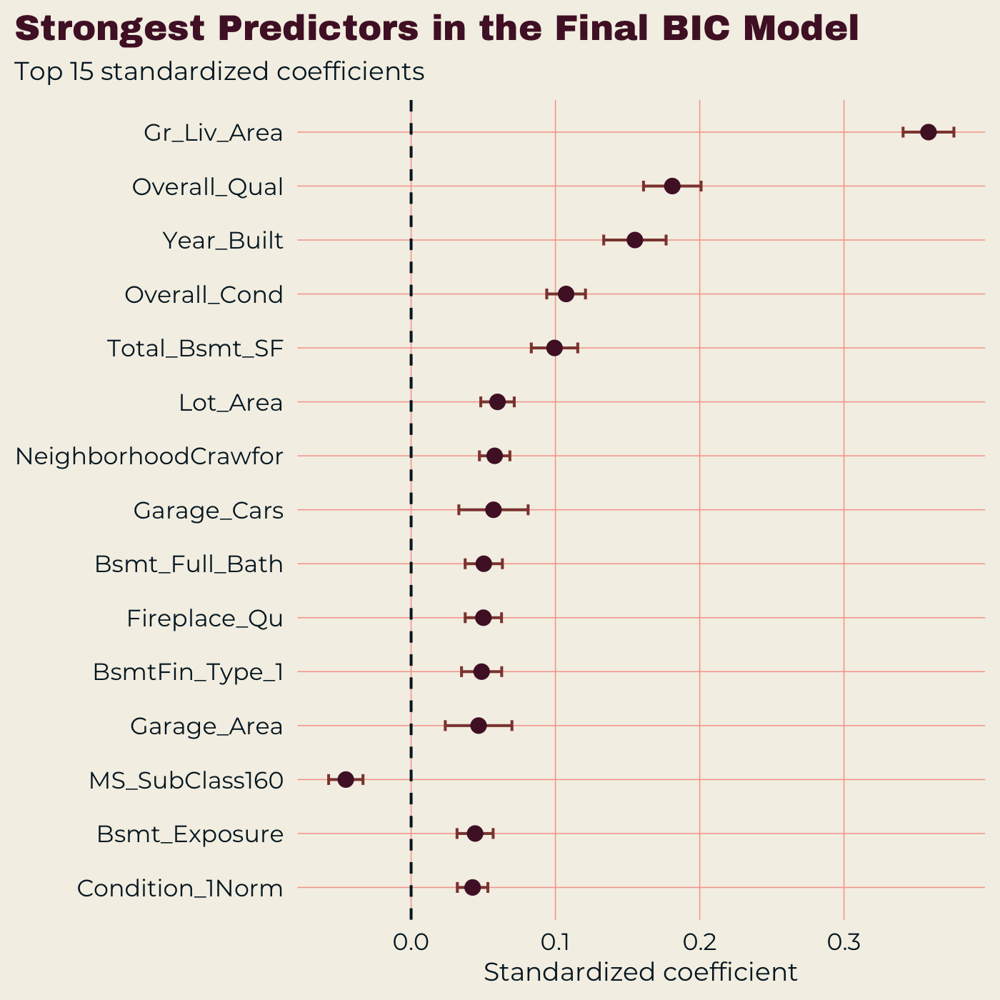
The strongest-predictors figure shows how a small number of variables dominate while many others make smaller adjustments. It plots confidence intervals around each effect, and those are worth reading for scale only — for reasons given below, the usual interval interpretation does not hold for a model whose variables were chosen from the same data.
A second kitchen is not necessarily an amenity
For a typical single-family home, moving from one above-ground kitchen to two was associated with about a 7.5 % lower sale price.
That does not mean kitchens reduce value. In Ames, a second kitchen can signal a duplex conversion or another nonstandard layout, which is plausible in a university housing market.
Condition hides behind quality
On its own, overall condition has almost no relationship with price. Once overall quality and the other housing characteristics are accounted for, however, condition becomes one of the strongest predictors in the model.
The reason is that condition and quality run in opposite directions in this market. Older, cheaper houses often carry high condition ratings — they have been maintained — while scoring low on overall quality. So when you look at condition alone, its positive association with price is offset by its association with low quality, and the two nearly cancel. Holding quality fixed removes much of that offset, leaving a considerably stronger conditional association between condition and price.
The same training data both chose which variables entered the model and estimated their effects, which means the usual standard errors and confidence intervals are too narrow — selection tends to favor variables that happened to look strong in this particular sample, so their estimated effects are pushed away from zero. The consequences are well documented (Berk et al., 2013), along with methods for producing intervals that stay valid after selection. I applied none of them. Read the effect sizes as descriptions of this fitted model, not as measurements of the Ames housing market.
Limitations
Where the Model Struggled
The final R model made larger percentage errors on lower-priced houses.
Average percentage error was:
- 9.46 % for the lowest-priced third
- 7.26 % for the middle third
- 6.53 % for the highest-priced third
That does not mean lower-priced houses produced the largest errors in dollars. A small percentage miss on an expensive house can still represent more money than a larger percentage miss on a cheaper one.
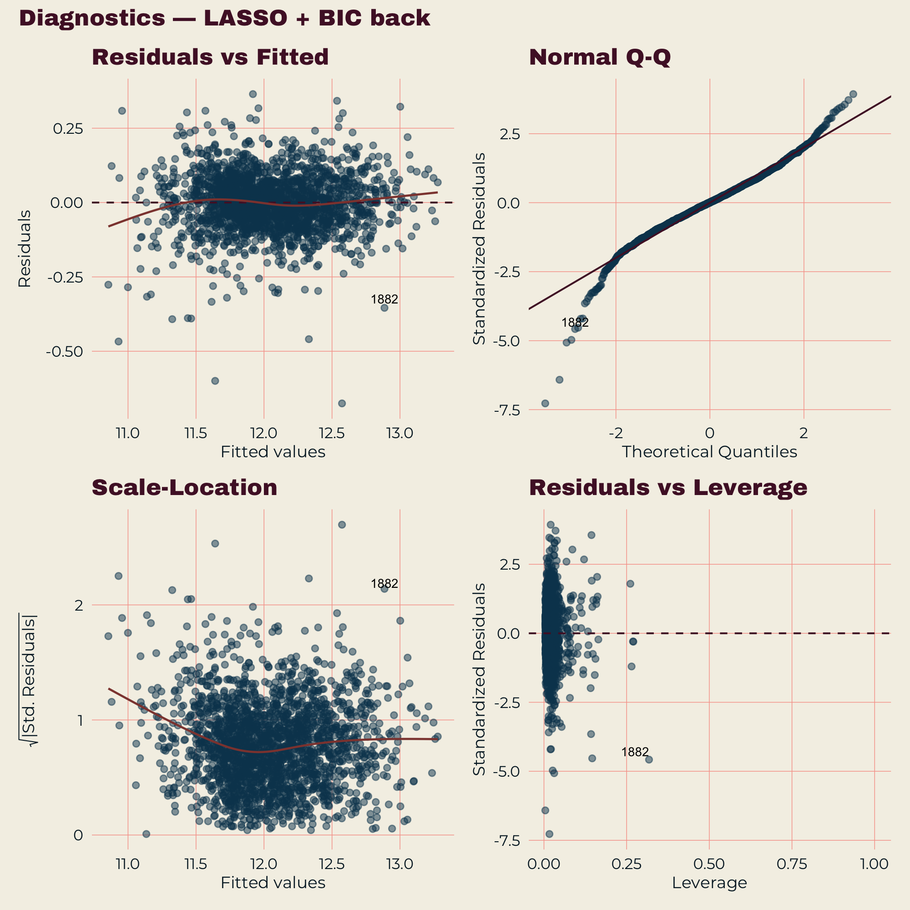
The residual and scale-location panels show that the spread of the errors changes across the price range. A formal test agrees: the Breusch-Pagan test (Breusch and Pagan, 1979) rejected constant variance, with a statistic of 197.1 on 43 degrees of freedom.
The Normal Q-Q panel adds a separate problem. Through the middle and upper range the errors follow the expected pattern closely, but the low end pulls sharply away from it: a small number of houses are overpredicted far more badly than the rest of the distribution would suggest. The model’s worst misses are one-directional. With more than two thousand training observations, non-normal errors do not meaningfully threaten the coefficient estimates. They do undermine any prediction interval built on the normal assumption (Hastie, Tibshirani and Friedman, 2009) — which is one reason this page reports error magnitudes rather than intervals around individual predictions.
One thing the diagnostics did not find is worth stating. The residuals-versus-fitted panel is nearly flat across the whole fitted range, so there is no sign that the linear specification is missing curvature after the log transform on sale price.
Sale condition mattered too, though not in the way I first assumed. Measuring the spread of the errors within each group and comparing against ordinary sales:
| Sale condition | Houses | Error spread vs. Normal |
|---|---|---|
Alloca |
21 | 2.1× |
Family |
37 | 1.8× |
Partial |
194 | 1.1× |
Normal |
1,921 | 1.0× |
AdjLand |
9 | 0.8× |
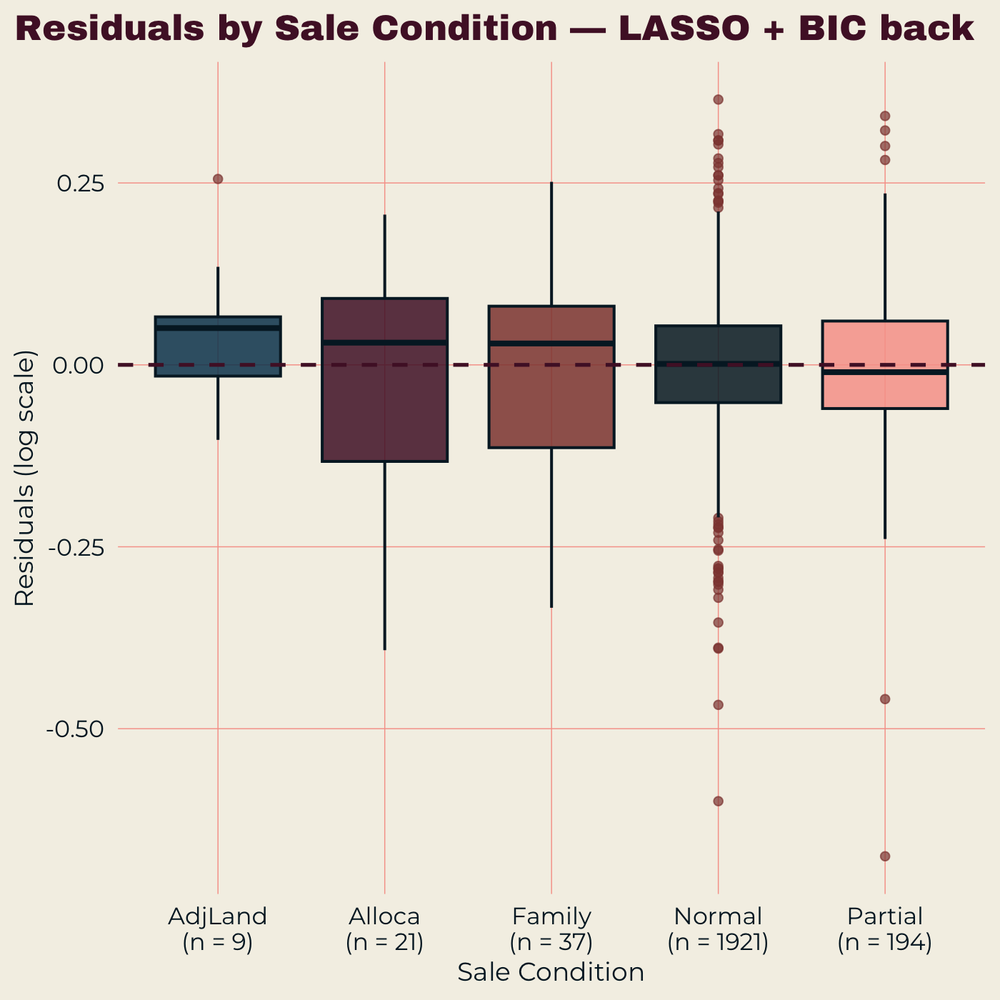
Allocation and family sales were roughly twice as variable as ordinary
ones, which fits the intuition that non-arm’s-length transactions are
harder to price. Partial sales, though, were barely
different from Normal — despite being the largest of the non-standard
groups. What sets them apart is a longer tail of large negative
misses, not a wider middle. And AdjLand sales were
actually tighter than Normal, on nine houses, which is not much to
conclude from.
No group was systematically over- or under-predicted: the residual medians sit essentially at zero for all five. The major difference, visible in the side-by-side boxplots, was how variable the predictions were within each group.
Sale condition was itself available to the selection procedure and was not retained — consistent with this pattern, where the groups differ in the variability of their errors rather than in their direction. A predictor that shifts the expected price could not have captured that, and none was kept.
Rare categories
A Blind Spot in the Diagnostics
The most important weakness in the model came from variables supported by almost no data. Four of them survived into the final model:
| Variable | Training houses |
|---|---|
NeighborhoodGrnHill |
1 |
Exterior_1stPreCast |
1 |
Sale_TypeCon |
4 |
Has_Pool |
8 |
The two single-house variables are the serious ones. A category represented by one house gives that house complete control over its own fitted value. In statistical terms, its leverage — how much a house controls its own prediction — is exactly 1.0 (Hoaglin and Welsch, 1978). The model fits that house perfectly, so its prediction error is zero.
That sounds harmless. It is what makes the problem invisible.
Three standard checks all fail to catch it. Two fail because the arithmetic becomes undefined; the third fails for an unrelated reason.
Cook’s distance (Cook, 1977), a common measure of how much an observation influences the fitted model, does not rescue the situation. Its calculation divides by a term involving one minus the leverage, while the residual in the numerator is simultaneously zero. At leverage exactly 1 the result is undefined rather than reassuringly small, and these rows do not appear as ordinary finite points. The maximum of about 0.22 shown in the figure describes the remaining observations; it says nothing at all about the two singleton-supported rows.
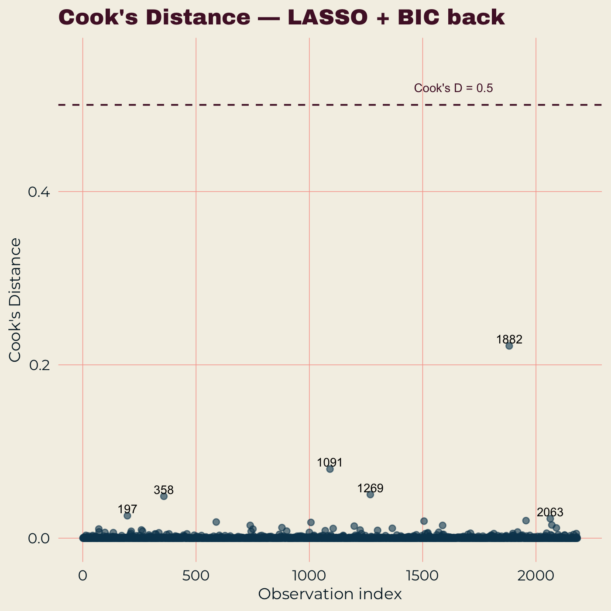
The Residuals vs Leverage figure is worse than uninformative — it omits them. Standardized errors are computed by dividing by a quantity that goes to zero as leverage approaches 1, so for these two houses the calculation is undefined and R silently drops both points from the plot. The only trace they leave is the horizontal axis, which extends all the way to 1.0 even though no visible point sits past about 0.32. The scale is the evidence; the houses themselves are not drawn.
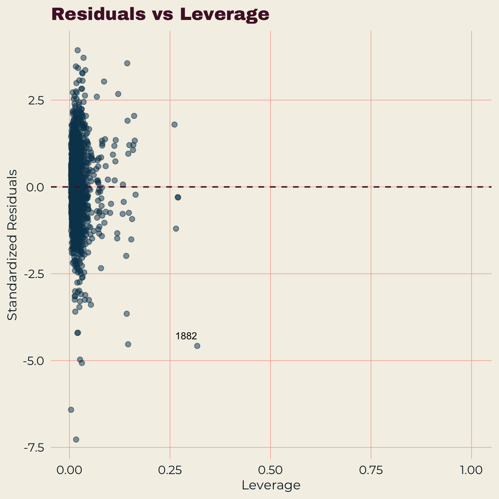
The strongest-predictors figure hides them a third way. A variable that equals 1 for one house out of 2,182 barely varies at all, and the standardizing used to make coefficients comparable shrinks its effect toward nothing. Neither singleton appears among the fifteen largest — despite implying price premiums of roughly 66 % and 68 %, with nominal p-values below 10⁻⁷.
None of these diagnostics is broken. Each is answering the question it was designed to answer. The trap is that two of them cannot be evaluated at all for the observations that matter most, and their displayed output describes only the observations where the arithmetic works — while looking, to a casual reader, like a clean bill of health.
Those premiums should not be treated as genuine market effects.
The fix belongs upstream, and it needs to be slightly broader than
collapsing rare categories. Has_Pool is not a rare factor
level at all — it is a presence indicator I built deliberately, and
only eight training houses have a pool. A rule that merges infrequent
categories would leave it untouched. What is actually needed is a
minimum-support requirement applied to the columns of the model matrix
itself, whatever their origin.
I did not rebuild the model after finding this. The test set had already been used for its single evaluation, and refitting after seeing test performance would have destroyed the one clean number the project has.
Structural checks
What Inspecting the Model Matrix Revealed
The rare categories were not the only hidden issue.
The R model matrix also contained four all-zero columns left behind by factor levels that no longer had any houses after the cleaning process. Dropping unused factor levels before modeling would have removed them.
The same leftover surfaced again later, in a place I was not looking
for it. When I computed error spread by sale condition,
Abnorml came back as an empty group — the category still
existed in the data’s definition even though every one of those sales
had been excluded hundreds of lines earlier. Harmless there, but it is
the same oversight appearing in a second form, which is usually how
these things announce themselves.
A third instance turned up later still, and this one was mine. Building the model-size comparison required a full-rank design matrix, and the check found nine columns that were exact linear combinations of others. Three were presence indicators I had created myself — for garage, alley, and masonry veneer — each perfectly reconstructible from the “none” level of the factor it was built from.
The cleaning section above describes removing definitionally redundant variables on purpose. I had guarded against the problem in the variables I removed and reintroduced it in the variables I added.
Worth noting which of my seven indicators were affected and which were not, because the distinction is not where the indicator came from but what else ended up in the design matrix alongside it.
All seven served the same purpose — flagging whether a feature was
present. Three became redundant because the corresponding nominal
factor stayed in the model with its absent level intact as a dummy
column: Garage_Type retains an “NA” level,
Alley retains “NA”, Mas_Vnr_Type retains
“None”. Once those columns exist, the presence indicator is exactly
one minus the absent-level dummy, which is a linear relationship and
therefore an exact dependency.
The other four — basement, fireplace, pool, and fence — escaped
because absence is encoded inside ordinal integer variables rather
than as a separate column. Bsmt_Qual is 0 for no basement
and 1 through 5 for a rated one; there is no standalone “no basement”
dummy anywhere in the matrix. An indicator for “greater than zero” is
a threshold on that integer, not a linear function of it, so no exact
dependency arises.
Together, these findings point to one broader pattern: automated model selection can produce a statistically workable model while still leaving structural details that need direct inspection.
The statistical procedure matters, but so does looking under the hood.
Conclusions
What I Took Away From the Project
The full model improved substantially on the simple two-variable baseline. Using only overall quality and living area, test RMSE was $35,519 and mean absolute percentage error 14.9 %. The final models brought those figures down to roughly $21,000 and 7.7 %.
At the same time, adding more variables did not produce a model that could be shown to predict better on the held-out test houses. A paired bootstrap over 10,000 resamples put the largest observed difference between candidate models at $694, with a 95 % interval from −$232 to +$1,760. Every comparison included zero, so the test data do not distinguish the larger and smaller models reliably. That is why I chose the smaller model for simplicity rather than claiming that it was more accurate.
The cross-language comparison came out differently than I expected, and better. R and Python selected perfectly nested variable sets at both stages — 43 predictors inside 45, and 56 inside 62, with nothing R kept that Python dropped. Their test RMSE differed by $53. Two software ecosystems with different defaults, once those defaults were reconciled, agreed not just on predictions but on variables.
Where selection did prove unstable was between genuinely different selection rules. Three ways of ranking the same predictors produced 20-variable models whose test errors spanned $4,048, and the overlap between any two rankings tracked how similarly they performed. That is the real finding about variable selection here. In this project, selection proved robust across matched implementations and far more sensitive to the choice of selection criterion.
The rare-category problem added one final lesson. A variable supported by a single house could survive the selection process, fit that house perfectly, and then escape three separate diagnostics. Cook’s distance and the standardized residual both become undefined at leverage 1 and vanish from their finite displays, while standardizing a near-constant predictor shrinks its coefficient enough to bury it in the coefficient plot. Unused categories could also remain hidden in the model matrix after cleaning. Those issues did not change the reported test accuracy, but they changed how much confidence I would place in some individual coefficients and how I would build the next version.
Good predictive accuracy is not the end of the analysis. The model still has to be inspected, challenged, and understood.
Specifications
Appendix: Final Model Comparison
Both final models, side by side. Naming conventions differ between the
two environments — R produces NeighborhoodGrnHill where
Python produces Neighborhood_GrnHill — so names below are
normalized for comparison.
Shared by both models (43 predictors)
Lot_Area |
Overall_Qual |
Overall_Cond |
Year_Built |
Year_Remod/Add |
Exter_Qual |
Bsmt_Exposure |
BsmtFin_Type_1 |
Total_Bsmt_SF |
Heating_QC |
Gr_Liv_Area |
Bsmt_Full_Bath |
Kitchen_AbvGr |
Kitchen_Qual |
Functional |
Fireplace_Qu |
Garage_Cars |
Garage_Area |
Wood_Deck_SF |
Open_Porch_SF |
Screen_Porch |
Has_Pool |
MS_SubClass_20 |
MS_SubClass_30 |
MS_SubClass_160 |
MS_Zoning_C (all) |
MS_Zoning_RH |
MS_Zoning_RM |
Street_Pave |
Neighborhood_Crawfor |
Neighborhood_Edwards |
Neighborhood_GrnHill |
Neighborhood_MeadowV |
Neighborhood_NridgHt |
Neighborhood_Somerst |
Neighborhood_StoneBr |
Condition_1_Norm |
Condition_1_PosA |
Exterior_1st_BrkFace |
Exterior_1st_PreCast |
Central_Air_Y |
Sale_Type_Con |
Sale_Type_New |
Python only (2 predictors)
Neighborhood_BrkSide, House_Style_2.5Fin
R only
None.
| R | Python | |
|---|---|---|
| Predictors | 43 | 45 |
| Test RMSE | $21,081 | $21,134 |
| Test MAE | $12,984 | $12,901 |
| Test MAPE | 7.75 % | 7.70 % |
| Adjusted R² | 0.9439 | 0.9444 |
Across all three R models, adjusted R² ranges from 0.9439 to 0.9449 — the LASSO and AIC models are within 0.00003 of each other, and BIC gives up about 0.001 for thirteen fewer predictors.
Full coefficient tables for all six models — three in each language — are reproducible from the committed analysis scripts.
Source
Repository
Both scripts, the committed train/test split, and every figure are in the repository.
Sources
References
- Akaike, H. (1974). A new look at the statistical model identification. IEEE Transactions on Automatic Control, 19(6), 716–723.
- Berk, R., Brown, L., Buja, A., Zhang, K., and Zhao, L. (2013). Valid post-selection inference. The Annals of Statistics, 41(2), 802–837.
- Breiman, L. (1996). Heuristics of instability and stabilization in model selection. The Annals of Statistics, 24(6), 2350–2383.
- Breusch, T. S., and Pagan, A. R. (1979). A Simple Test for Heteroscedasticity and Random Coefficient Variation. Econometrica, 47(5), 1287–1294.
- Cook, R. D. (1977). Detection of Influential Observation in Linear Regression. Technometrics, 19(1), 15–18.
- De Cock, D. (2011). Ames, Iowa: Alternative to the Boston Housing Data as an End of Semester Regression Project. Journal of Statistics Education, 19(3).
- Duan, N. (1983). Smearing Estimate: A Nonparametric Retransformation Method. Journal of the American Statistical Association, 78(383), 605–610.
- Efron, B. (1979). Bootstrap Methods: Another Look at the Jackknife. The Annals of Statistics, 7(1), 1–26.
- Friedman, J., Hastie, T., and Tibshirani, R. (2010). Regularization Paths for Generalized Linear Models via Coordinate Descent. Journal of Statistical Software, 33(1), 1–22.
- Hastie, T., Tibshirani, R., and Friedman, J. (2009). The Elements of Statistical Learning, 2nd edition. Springer.
- Hoaglin, D. C., and Welsch, R. E. (1978). The Hat Matrix in Regression and ANOVA. The American Statistician, 32(1), 17–22.
- Iowa State University, Office of Institutional Research. Historical Enrollment (Table EN02), Fact Book. Fall 2010 total enrollment 28,682.
- Meinshausen, N., and Bühlmann, P. (2010). Stability selection. Journal of the Royal Statistical Society: Series B, 72(4), 417–473.
- Schwarz, G. (1978). Estimating the dimension of a model. The Annals of Statistics, 6(2), 461–464.
- Tibshirani, R. (1996). Regression shrinkage and selection via the lasso. Journal of the Royal Statistical Society: Series B, 58(1), 267–288.
- Zou, H., and Hastie, T. (2005). Regularization and variable selection via the elastic net. Journal of the Royal Statistical Society: Series B, 67(2), 301–320.
- U.S. Census Bureau (2010a). 2010 Census of Population and Housing, Summary File 1, Table P1: Total Population — Ames city, Iowa (place code 1901855).
- U.S. Census Bureau (2010b). 2010 Census of Population and Housing, Summary File 1, Table H4: Tenure — Ames city, Iowa (place code 1901855). Occupied units 22,759; owner-occupied 9,703 (42.6 %); renter-occupied 13,056 (57.4 %).
- U.S. Census Bureau (2012). Housing Vacancies and Homeownership: Annual Statistics 2012 — national homeownership rate from the April 2010 Census, 65.1 %.